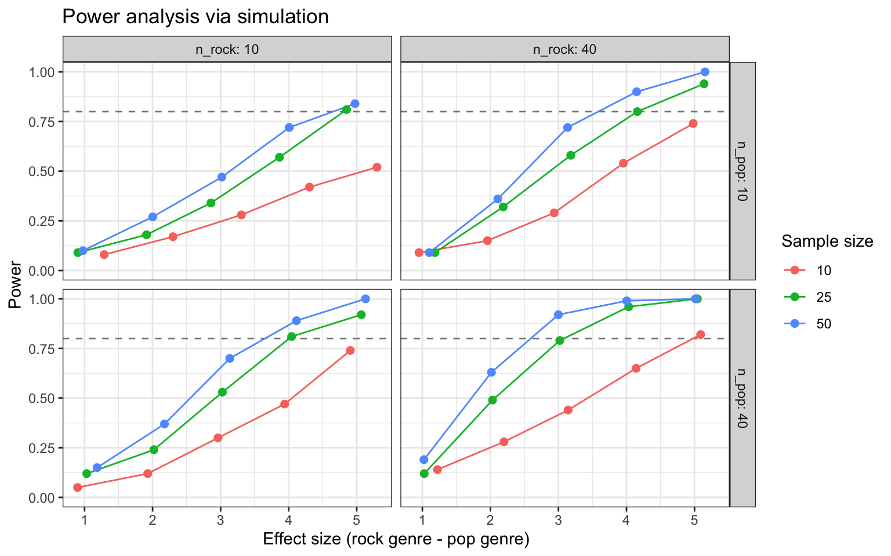

4 R
4.1 Setup
The main library we will use is stats and comes bundled with base R. However, we also need to install a few additional libraries onto our machine and then load them into our search path.
# uncomment the line below to install the {pacman} library on your computer
# install.packages("pacman")
pacman::p_load(
lme4, # model specification / estimation
lmerTest, # provides p-values in the model output
future, # parallelization
future.apply, # fast automation
furrr, # fast functional programming
faux, # simulate from multivariate normal distribution
broom.mixed, # extracting tidy data from model fits
tidyverse, # data wrangling and visualisation
gt # nice tables
)
faux_options(verbose = FALSE)We will also set the pseudo-random number generator seed to 02138 to make the stochastic components of our simulations reproducible.
Finally, let’s take advantage of background parallelization to speed-up R processes.
4.2 Data simulation step by step
To give an overview of the power simulation task, we will simulate data from a design with crossed random factors of subjects and songs (see Power of What? for design details), fit a model to the simulated data, recover the parameter values we put in from the model output, calculate power, and finally automate the whole process so that we can calculate power for different effect sizes. First, let’s write some code that creates datasets under the alternative hypothesis.
4.2.2 Establish the data-generating parameters
# set all data-generating parameters
beta_0 <- 60 # intercept; i.e., the grand mean
beta_1 <- 5 # slope; i.e, effect of category
omega_0 <- 3 # by-song random intercept sd
tau_0 <- 7 # by-subject random intercept sd
tau_1 <- 4 # by-subject random slope sd
rho <- 0.2 # correlation between intercept and slope
sigma <- 8 # residual (error) sd4.2.5 Simulate the sampling of subjects
We will use the function faux::rnorm_multi(), which generates a table of n simulated values from a multivariate normal distribution by specifying the means (mu) and standard deviations (sd) of each variable, plus the correlations (r), which can be either a single value (applied to all pairs), a correlation matrix, or a vector of the values in the upper right triangle of the correlation matrix.
# simulate a sample of subjects
# sample from a multivariate normal distribution
subjects <- faux::rnorm_multi(
n = n_subj,
mu = 0, # means for random effects are always 0
sd = c(tau_0, tau_1), # set SDs
r = rho, # set correlation, see ?rnorm_multi
varnames = c("T_0j", "T_1j")
) |>
mutate(subj_id = seq_len(n_subj)) # add subject IDs4.2.6 Check the simulated values
tibble(
parameter = c("omega_0", "tau_0", "tau_1", "rho"),
value = c(omega_0, tau_0, tau_1, rho),
simulated = c(
sd(songs$O_0i),
sd(subjects$T_0j),
sd(subjects$T_1j),
cor(subjects$T_0j, subjects$T_1j)
)
)## # A tibble: 4 × 3
## parameter value simulated
## <chr> <dbl> <dbl>
## 1 omega_0 3 3.00
## 2 tau_0 7 7.87
## 3 tau_1 4 4.05
## 4 rho 0.2 0.4954.2.9 Plot the data
dat_sim |>
ggplot(aes(category, liking_ij, color = category)) +
# predicted means
geom_hline(yintercept = (beta_0 + 0*beta_1),
color = "orange", linetype = "dashed", linewidth = 1) +
geom_hline(yintercept = (beta_0 + 1*beta_1),
color = "dodgerblue", linetype = "dashed", linewidth = 1) +
# actual data
geom_violin(alpha = 0.5, show.legend = FALSE, fill = "grey65") +
stat_summary(fun = mean, geom="crossbar", show.legend = FALSE) +
scale_color_manual(values = c("orange", "dodgerblue")) +
ggtitle("Predicted versus simulated values") +
theme_bw()
4.2.10 Analyze the simulated data
# fit a linear mixed-effects model to data
mod_sim <- lmer(liking_ij ~ 1 + genre_i + (1 | song_id) + (1 + genre_i | subj_id), data = dat_sim)
summary(mod_sim, corr = FALSE)## Linear mixed model fit by REML. t-tests use Satterthwaite's method [
## lmerModLmerTest]
## Formula: liking_ij ~ 1 + genre_i + (1 | song_id) + (1 + genre_i | subj_id)
## Data: dat_sim
##
## REML criterion at convergence: 5392.5
##
## Scaled residuals:
## Min 1Q Median 3Q Max
## -3.00888 -0.66610 0.02982 0.64259 2.95212
##
## Random effects:
## Groups Name Variance Std.Dev. Corr
## song_id (Intercept) 12.60 3.550
## subj_id (Intercept) 57.18 7.562
## genre_i 22.98 4.793 0.45
## Residual 62.81 7.926
## Number of obs: 750, groups: song_id, 30; subj_id, 25
##
## Fixed effects:
## Estimate Std. Error df t value Pr(>|t|)
## (Intercept) 58.474 1.815 37.775 32.216 < 2e-16 ***
## genre_i 7.501 1.713 40.857 4.379 8.09e-05 ***
## ---
## Signif. codes: 0 '***' 0.001 '**' 0.01 '*' 0.05 '.' 0.1 ' ' 1Use broom.mixed::tidy(mod_sim) to get a tidy table of the results. Below, we added column “parameter” and “value”, so you can compare the estimate from the model to the parameters you used to simulate the data.
# get a tidy table of results
broom.mixed::tidy(mod_sim) |>
mutate(across(is.numeric, round, 3)) |>
mutate(
parameter = c("beta_0", "beta_1", "tau_0", "rho", "tau_1", "omega_0", "sigma"),
value = c(beta_0, beta_1, tau_0, rho, tau_1, omega_0, sigma),
) |>
select(term, parameter, value, estimate) |>
knitr::kable()| term | parameter | value | estimate |
|---|---|---|---|
| (Intercept) | beta_0 | 60.0 | 58.474 |
| genre_i | beta_1 | 5.0 | 7.501 |
| sd__(Intercept) | tau_0 | 7.0 | 3.550 |
| sd__(Intercept) | rho | 0.2 | 7.562 |
| cor__(Intercept).genre_i | tau_1 | 4.0 | 0.451 |
| sd__genre_i | omega_0 | 3.0 | 4.793 |
| sd__Observation | sigma | 8.0 | 7.926 |
4.3 Data simulation automated
Now that we’ve tested the data generating code, we can put it into a function so that it’s easy to run it repeatedly.
# set up the custom data simulation function
sim_data <- function(
n_subj = 25, # number of subjects
n_pop = 15, # number of pop songs
n_rock = 15, # number of rock songs
beta_0 = 60, # mean for pop genre
beta_1 = 5, # effect of genre
omega_0 = 3, # by-song random intercept sd
tau_0 = 7, # by-subject random intercept sd
tau_1 = 4, # by-subject random slope sd
rho = 0.2, # correlation between intercept and slope
sigma = 8 # residual (standard deviation)
)
{
# simulate a sample of songs
songs <- tibble(
song_id = seq_len(n_pop + n_rock),
category = rep(c("pop", "rock"), c(n_pop, n_rock)),
genre_i = rep(c(0, 1), c(n_pop, n_rock)),
O_0i = rnorm(n = n_pop + n_rock, mean = 0, sd = omega_0)
)
# simulate a sample of subjects
subjects <- faux::rnorm_multi(
n = n_subj,
mu = 0,
sd = c(tau_0, tau_1),
r = rho,
varnames = c("T_0j", "T_1j")
) |>
mutate(subj_id = seq_len(n_subj))
# cross subject and song IDs
crossing(subjects, songs) |>
mutate(e_ij = rnorm(n(), mean = 0, sd = sigma),
liking_ij = beta_0 + T_0j + O_0i + (beta_1 + T_1j) * genre_i + e_ij) |>
select(subj_id, song_id, category, genre_i, liking_ij)
}4.4 Power calculation (single run)
We can wrap the data generating function and analysis code in a new function (power_run()) that returns a tidy table of the analysis results.
# set up the power function
power_run <- function(...) {
# ... is a shortcut that forwards any additional arguments to sim_data()
dat_sim <- sim_data(...)
mod_sim <- suppressWarnings({ suppressMessages({ # suppress singularity messages
lmerTest::lmer(liking_ij ~ 1 + genre_i + (1 | song_id) + (1 + genre_i | subj_id), data = dat_sim)
})})
broom.mixed::tidy(mod_sim)
}## # A tibble: 7 × 8
## effect group term estimate std.error statistic df p.value
## <chr> <chr> <chr> <dbl> <dbl> <dbl> <dbl> <dbl>
## 1 fixed <NA> (Intercept) 60.9 1.89 32.2 34.6 2.26e-27
## 2 fixed <NA> genre_i 4.23 1.58 2.68 39.9 1.08e- 2
## 3 ran_pars song_id sd__(Intercept) 3.27 NA NA NA NA
## 4 ran_pars subj_id sd__(Intercept) 8.24 NA NA NA NA
## 5 ran_pars subj_id cor__(Intercep… 0.678 NA NA NA NA
## 6 ran_pars subj_id sd__genre_i 4.37 NA NA NA NA
## 7 ran_pars Residual sd__Observation 7.73 NA NA NA NA## # A tibble: 7 × 8
## effect group term estimate std.error statistic df p.value
## <chr> <chr> <chr> <dbl> <dbl> <dbl> <dbl> <dbl>
## 1 fixed <NA> (Intercept) 57.0 1.97 29.0 44.9 1.05e-30
## 2 fixed <NA> genre_i 1.54 1.76 0.873 57.3 3.86e- 1
## 3 ran_pars song_id sd__(Intercept) 3.46 NA NA NA NA
## 4 ran_pars subj_id sd__(Intercept) 7.77 NA NA NA NA
## 5 ran_pars subj_id cor__(Intercep… 0.210 NA NA NA NA
## 6 ran_pars subj_id sd__genre_i 5.85 NA NA NA NA
## 7 ran_pars Residual sd__Observation 7.92 NA NA NA NA4.5 Power calculation automated
To get an accurate estimation of power, we need to run the simulation many times. We use 100 here as an example, but the results will be more accurate the more replications you run. This will depend on the specifics of your analysis, but we recommend at least 1000 replications.
# calculate mean estimates and power for specified alpha
sims |>
filter(term == "genre_i") |>
group_by(term) |>
summarise(
mean_estimate = mean(estimate),
mean_se = mean(std.error),
power = mean(p.value < alpha),
.groups = "drop"
)## # A tibble: 1 × 4
## term mean_estimate mean_se power
## <chr> <dbl> <dbl> <dbl>
## 1 genre_i 4.96 1.48 0.884.5.1 Check false positive rate
Set the effect of genre_ij to 0 to calculate the false positive rate. This is the probability of concluding there is an effect when there is no actual effect in your population.
# run simulations and calculate the false positive rate
sims_fp <- map_df(1:reps, ~ power_run(beta_1 = 0))
# calculate mean estimates and power for specified alpha
sims_fp |>
filter(term == "genre_i") |>
summarise(power = mean(p.value < alpha))## # A tibble: 1 × 1
## power
## <dbl>
## 1 0.04Ideally, the false positive rate will be equal to alpha, which we set here at 0.05.
4.6 Power for different effect sizes
In real life, we will not know the effect size of our quantity of interest and so we will need to repeatedly perform the power analysis over a range of different plausible effect sizes.
# grid of paramater values of interest
pgrid <- crossing(
n_subj = c(10, 25, 50),
n_pop = c(10, 40),
n_rock = c(10, 40),
beta_1 = 1:5
)
# fit the models over the parameters
parameter_search <- function(params = pgrid){
future_pmap_dfr(
.l = params, # iterate over the grid of parameter values
.f = ~ power_run(n_subj = ..1, # plug each row of parameter values into power_run()
n_pop = ..2,
n_rock = ..3,
beta_1 = ..4),
.options = furrr_options(seed = TRUE),
.progress = TRUE
)
}Fair warning, this will take some time!
# replicate the parameter grid to match the dimensions of the model outputs
pgrid_expand <- pgrid |>
slice(rep(1:n(), each = 7)) |> # replicate each row by 7 parameters
map_df(rep.int, times = reps) # replicate the whole grid by number of reps
sims_params <- future_replicate(
n = reps,
expr = parameter_search(),
simplify = FALSE
) |>
imap( ~ mutate(.x, rep = .y, .before = "effect")) |> # include rep ID
bind_rows() |> # combine into a single tibble
mutate(pgrid_expand, .before = "effect") # add in the parameter gridsims_table <- sims_params |>
filter(term == "genre_i") |>
group_by(term, n_subj, n_pop, n_rock, beta_1) |>
summarise(
mean_estimate = mean(estimate),
mean_se = mean(std.error),
power = mean(p.value < alpha),
.groups = "drop"
)Here’s the graph from the simulation.
sims_table |>
mutate(across(n_subj:beta_1, as.factor),
n_pop = paste0("n_pop: ", n_pop),
n_rock = paste0("n_rock: ", n_rock)) |>
ggplot(aes(x = mean_estimate, y = power,
group = n_subj, color = n_subj)) +
geom_hline(yintercept = 0.8, linetype = "dashed",
color = "grey50", linewidth = 0.5) +
geom_line() +
geom_point(size = 2) +
facet_grid(n_pop ~ n_rock) +
ylim(0, 1) +
labs(x = "Effect size (rock genre - pop genre)",
y = "Power",
title = "Power analysis via simulation",
color = "Sample size") +
theme_bw()
Here’s the table from the simulation.
sims_table |>
gt() |>
tab_header(title = "Power values for mixed effects model") |>
data_color(
columns = power,
fn = scales::col_numeric(
palette = c("red", "green"),
domain = c(0, 1)
)
)| Power values for mixed effects model | |||||||
| term | n_subj | n_pop | n_rock | beta_1 | mean_estimate | mean_se | power |
|---|---|---|---|---|---|---|---|
| genre_i | 10 | 10 | 10 | 1 | 1.2886415 | 2.2051926 | 0.08 |
| genre_i | 10 | 10 | 10 | 2 | 2.2995193 | 2.1978048 | 0.17 |
| genre_i | 10 | 10 | 10 | 3 | 3.3051960 | 2.1870553 | 0.28 |
| genre_i | 10 | 10 | 10 | 4 | 4.3064995 | 2.1859357 | 0.42 |
| genre_i | 10 | 10 | 10 | 5 | 5.2980658 | 2.1916204 | 0.52 |
| genre_i | 10 | 10 | 40 | 1 | 0.9504992 | 1.8476274 | 0.09 |
| genre_i | 10 | 10 | 40 | 2 | 1.9560039 | 1.8404321 | 0.15 |
| genre_i | 10 | 10 | 40 | 3 | 2.9363111 | 1.8437168 | 0.29 |
| genre_i | 10 | 10 | 40 | 4 | 3.9538652 | 1.8365045 | 0.54 |
| genre_i | 10 | 10 | 40 | 5 | 4.9815307 | 1.8329912 | 0.74 |
| genre_i | 10 | 40 | 10 | 1 | 0.8972998 | 1.8730572 | 0.05 |
| genre_i | 10 | 40 | 10 | 2 | 1.9288786 | 1.8813209 | 0.12 |
| genre_i | 10 | 40 | 10 | 3 | 2.9615486 | 1.8853713 | 0.30 |
| genre_i | 10 | 40 | 10 | 4 | 3.9411311 | 1.8819500 | 0.47 |
| genre_i | 10 | 40 | 10 | 5 | 4.9069115 | 1.8832601 | 0.74 |
| genre_i | 10 | 40 | 40 | 1 | 1.2218135 | 1.5382892 | 0.14 |
| genre_i | 10 | 40 | 40 | 2 | 2.1995445 | 1.5369176 | 0.28 |
| genre_i | 10 | 40 | 40 | 3 | 3.1428056 | 1.5342389 | 0.44 |
| genre_i | 10 | 40 | 40 | 4 | 4.1413103 | 1.5303200 | 0.65 |
| genre_i | 10 | 40 | 40 | 5 | 5.0898503 | 1.5304581 | 0.82 |
| genre_i | 25 | 10 | 10 | 1 | 0.9010020 | 1.7053380 | 0.09 |
| genre_i | 25 | 10 | 10 | 2 | 1.9115412 | 1.6999440 | 0.18 |
| genre_i | 25 | 10 | 10 | 3 | 2.8576675 | 1.7003355 | 0.34 |
| genre_i | 25 | 10 | 10 | 4 | 3.8647335 | 1.6991640 | 0.57 |
| genre_i | 25 | 10 | 10 | 5 | 4.8511643 | 1.6958735 | 0.81 |
| genre_i | 25 | 10 | 40 | 1 | 1.1839103 | 1.4401973 | 0.09 |
| genre_i | 25 | 10 | 40 | 2 | 2.1873078 | 1.4406353 | 0.32 |
| genre_i | 25 | 10 | 40 | 3 | 3.1806765 | 1.4424616 | 0.58 |
| genre_i | 25 | 10 | 40 | 4 | 4.1595173 | 1.4434819 | 0.80 |
| genre_i | 25 | 10 | 40 | 5 | 5.1404194 | 1.4436587 | 0.94 |
| genre_i | 25 | 40 | 10 | 1 | 1.0324710 | 1.4209199 | 0.12 |
| genre_i | 25 | 40 | 10 | 2 | 2.0190181 | 1.4226040 | 0.24 |
| genre_i | 25 | 40 | 10 | 3 | 3.0263586 | 1.4243192 | 0.53 |
| genre_i | 25 | 40 | 10 | 4 | 4.0436168 | 1.4232637 | 0.81 |
| genre_i | 25 | 40 | 10 | 5 | 5.0682301 | 1.4260783 | 0.92 |
| genre_i | 25 | 40 | 40 | 1 | 1.0273661 | 1.0713724 | 0.12 |
| genre_i | 25 | 40 | 40 | 2 | 2.0305613 | 1.0704567 | 0.49 |
| genre_i | 25 | 40 | 40 | 3 | 3.0194512 | 1.0699520 | 0.79 |
| genre_i | 25 | 40 | 40 | 4 | 4.0329333 | 1.0713592 | 0.96 |
| genre_i | 25 | 40 | 40 | 5 | 5.0415911 | 1.0712682 | 1.00 |
| genre_i | 50 | 10 | 10 | 1 | 0.9763592 | 1.5100534 | 0.10 |
| genre_i | 50 | 10 | 10 | 2 | 2.0011045 | 1.5062776 | 0.27 |
| genre_i | 50 | 10 | 10 | 3 | 3.0168648 | 1.5041742 | 0.47 |
| genre_i | 50 | 10 | 10 | 4 | 4.0085769 | 1.5084746 | 0.72 |
| genre_i | 50 | 10 | 10 | 5 | 4.9752729 | 1.5112556 | 0.84 |
| genre_i | 50 | 10 | 40 | 1 | 1.1014179 | 1.2614984 | 0.09 |
| genre_i | 50 | 10 | 40 | 2 | 2.1089309 | 1.2590881 | 0.36 |
| genre_i | 50 | 10 | 40 | 3 | 3.1342221 | 1.2577565 | 0.72 |
| genre_i | 50 | 10 | 40 | 4 | 4.1502230 | 1.2587266 | 0.90 |
| genre_i | 50 | 10 | 40 | 5 | 5.1546151 | 1.2577518 | 1.00 |
| genre_i | 50 | 40 | 10 | 1 | 1.1843285 | 1.2599090 | 0.15 |
| genre_i | 50 | 40 | 10 | 2 | 2.1753171 | 1.2610689 | 0.37 |
| genre_i | 50 | 40 | 10 | 3 | 3.1341799 | 1.2599513 | 0.70 |
| genre_i | 50 | 40 | 10 | 4 | 4.1151274 | 1.2600747 | 0.89 |
| genre_i | 50 | 40 | 10 | 5 | 5.1296019 | 1.2581424 | 1.00 |
| genre_i | 50 | 40 | 40 | 1 | 1.0231829 | 0.9119778 | 0.19 |
| genre_i | 50 | 40 | 40 | 2 | 2.0152660 | 0.9127856 | 0.63 |
| genre_i | 50 | 40 | 40 | 3 | 2.9988844 | 0.9128247 | 0.92 |
| genre_i | 50 | 40 | 40 | 4 | 4.0029801 | 0.9132309 | 0.99 |
| genre_i | 50 | 40 | 40 | 5 | 5.0120642 | 0.9141164 | 1.00 |